Filtering Options Strategies for Usefulness
How Anton Kreil filters 53 retail-available US-listed options strategies down to 17 that actually fit the retail trader mandate.
Most retail options strategies are noise. This chapter builds the master classification matrix — 53 strategies scored across 9 columns — and runs the capital-constraint, directional, and simplicity filters that collapse it to a useful core. The output is a lifetime shortcut: a spreadsheet and two PDFs that tell you, in seconds, whether a strategy is worth doing.
The gist
- There are 53 options trading strategies generally available to retail traders in the US-listed stock options market; a master spreadsheet (sheet named ALL) classifies each across 9 columns.
- The 9 columns are: Strategy Name, D/C (Debit/Credit), Level (Simple/Advanced), D/ND (Directional/Non Directional), Bias (Bullish/Bearish/Neutral/Volatility Bet), POTM Core Y/N, $ Risk (Limited/Unlimited/Defined), $ Reward (Limited/Unlimited), and Usefullness (Low/Medium/High).
- Colour code: yellow rows = core / higher-usefulness strategies taught in the POTM; blue rows = non-directional hedging/volatility overlays covered in specific situations; open/salmon rows = Low usefulness, not taught.
- First filter is your capital constraint: US retail traders face a 50% margin requirement (~2x leverage) while international CFD traders get roughly 10% on mega/large caps, 20% on mid caps, and 30-50% on small caps.
- The main filter is Directional vs Non-Directional: of the 53, 29 are non-directional and 24 are directional — because the retail mandate begins with a fundamental predisposition (bullish or bearish) BEFORE options are even considered.
- Adding a Simple-vs-Advanced filter (dropping advanced market-maker structures for the opportunity cost of time) leaves 16 strategies; re-adding the useful non-directional hedging overlays gives 17 useful strategies for the useful PDF.
- The POTM Core = Y filter is the one-click shortcut to the useful set — HIGH: Bear Put Spread, Bull Call Spread, Covered Call Collar, Long Call, Long Put, Short Put (Naked); MEDIUM: Bear Put Ladder Spread, Bull Call Ladder Spread, Condor Spread, Long Straddle, Long Strangle, Strap Straddle, Strap Strangle, Strip Straddle, Strip Strangle, Short Bear Ratio Spread.
- Two PDFs ship with the spreadsheet: Options Trading Strategies Useful (the basis of the whole POTM series) and Options Trading Strategies Not Useful (kept so you can see WHY the useless ones are useless).
- The cardinal sin: never take an options position for the hell of it, or just because you lack the capital to size the underlying — you must have a fundamental predisposition or an existing stock position first.
Perspective: useful vs non-useful strategies
- Video 3 is about options market perspective — the difference between useful and non-useful options trading strategies.
- Trading any instrument means applying filters: which instruments add value, and which ways of using them add value to you.
- The retail trader mandate (from videos 1-2) is the same as a hedge fund manager or bank prop trader: make the most money with the least risk.
The chapter opens by framing the whole exercise as filtering. The US-listed options space is defined by which strategies are available and which genuinely add value to the retail mandate.
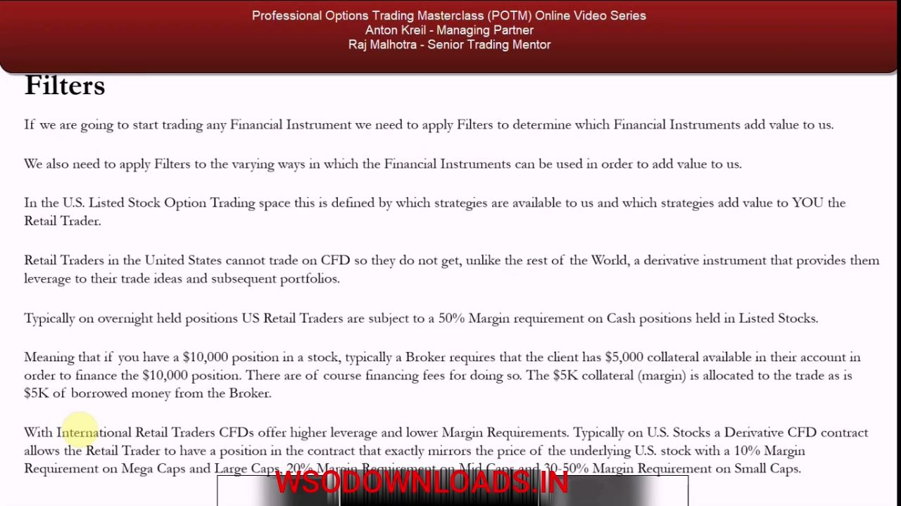
Why US retail traders reach for options
- US retail traders cannot trade CFDs (banned in 2010 after excessive leverage blew up accounts), so they hold cash stock positions.
- US brokers require a 50% margin requirement on stock positions — a $10,000 position needs $5,000 collateral (margin) plus $5,000 borrowed, so only ~2x leverage.
- International CFD traders get far higher leverage: ~10% margin on mega/large caps, ~20% on mid caps, 30-50% on small caps (set by volatility).
- Listed options are still available in the US and offer leverage on underlying stocks, which is why they became so popular with US retail traders.
The leverage gap between US cash positions and international CFDs is the structural reason options are relatively more useful to US retail traders — but that popularity is also where the losses come from.
The 80% problem: why retail options traders lose
- About 80% of US retail traders trading listed options are down at any one time.
- Options are NOT a simple replacement for being long, short, or flat a stock — multiple other factors drive their value.
- Using options as a directional proxy 'for the sake of it', or because you can't get the leverage you want, are not reasons to hold an options position.
- Over-complication (often from charlatan educators, ex-floor brokers, or market makers who ignore the retail mandate) is a second major cause of losses.
A stock goes where fundamentals take it regardless of how much leverage a random retail trader uses. There must be a specific reason to own an option — a marginal benefit over the underlying — not just availability or capital shortage.
Filter 1: know your capital constraint
- Because of the leverage difference (US 50% margin vs international CFD 10-20%), options are in general more useful for US retail traders than for international ones.
- An international CFD trader with a view puts up less margin for the same exposure — higher potential ROI, but also much higher risk.
- This does NOT mean options on US stocks are useless to international traders; many scenarios make an options position preferable, all down to risk/reward and marginal benefit.
- The first filter: are you a US retail trader (50% margin) or an international CFD trader (10-20% margin)? Only you can know this.
The course can only show the strategies useful to all retail traders globally in varying circumstances; the reader applies their own capital constraint to decide which apply to them.
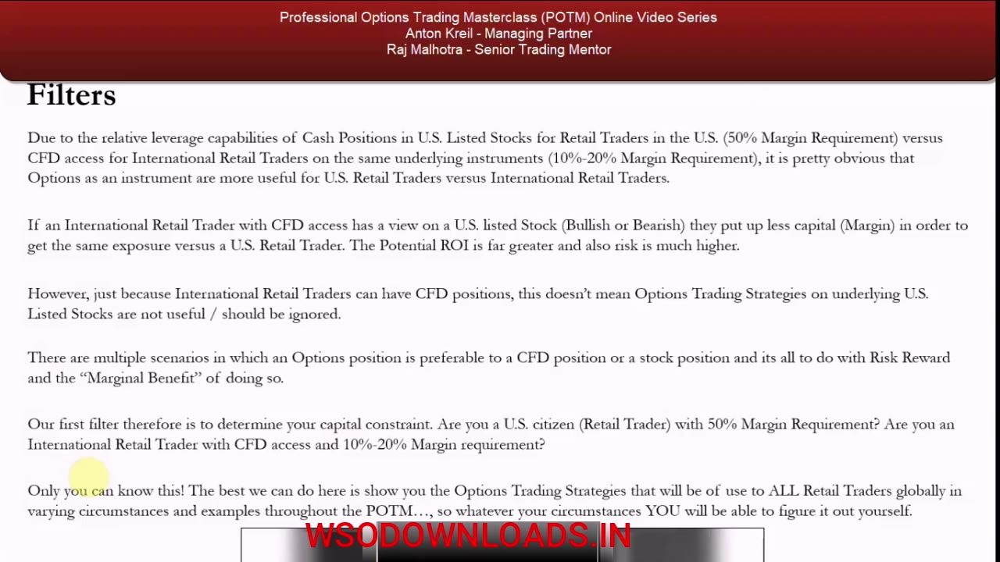
The resources: the spreadsheet and two PDFs
- The download section holds the Options Trading Strategies spreadsheet — nearly every strategy available to retail traders globally on US-listed stock options.
- PDF one: Options Trading Strategies Useful — characterises and explains every useful strategy; it forms the basis of the entire POTM video series.
- PDF two: Options Trading Strategies Not Useful — same format, kept so you can properly distinguish useful from useless.
- Usefulness is ranked Low / Medium / High against the retail mandate (a long-only pension book or a 1-3 month long/short equities book).
The spreadsheet and PDFs together are a lifetime shortcut: at your desk you can open them and, using the filters, assess in seconds whether a candidate strategy is worth doing.
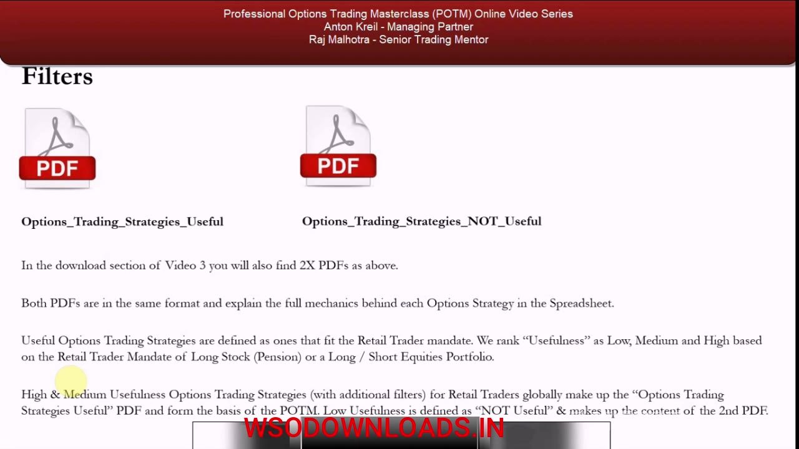
The master classification matrix (the ALL sheet)
- The ALL sheet (far-right tab) lists all 53 strategies; a COUNT column on the far right does the tallying.
- Nine columns classify each row: Strategy Name, D/C, Level, D/ND, Bias, POTM Core Y/N, $ Risk, $ Reward, Usefullness.
- $ Risk values include Limited, Unlimited, and defined variants (Low Defined, Medium Unlimited, High Defined); $ Reward is Limited or Unlimited.
- Bias spans Bullish, Bearish, Neutral, and Volatility Bet.
Each row is one strategy; each column is a filterable attribute. The matrix is the engine — every reduction that follows is just a filter applied to these columns.
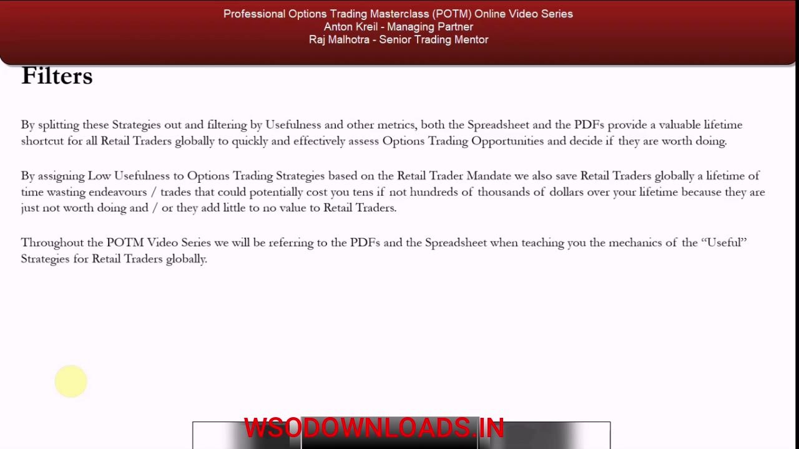
Reading the colour code
- Yellow rows = the core strategies covered in the POTM because of their usefulness (highest usefulness to the retail mandate).
- Blue rows = also covered, even though non-directional, because they earn their keep in specific situations (mainly hedging) and help explain the useful directional strategies.
- Open-colour rows = not covered, because of low usefulness — generally pretty useless for the retail mandate.
- Every open row carries Low usefulness; yellow and blue carry Medium or High.
The colour is a fast visual index of the usefulness verdict. Yellow and blue are the map of what the course teaches; open is the map of what it deliberately skips.
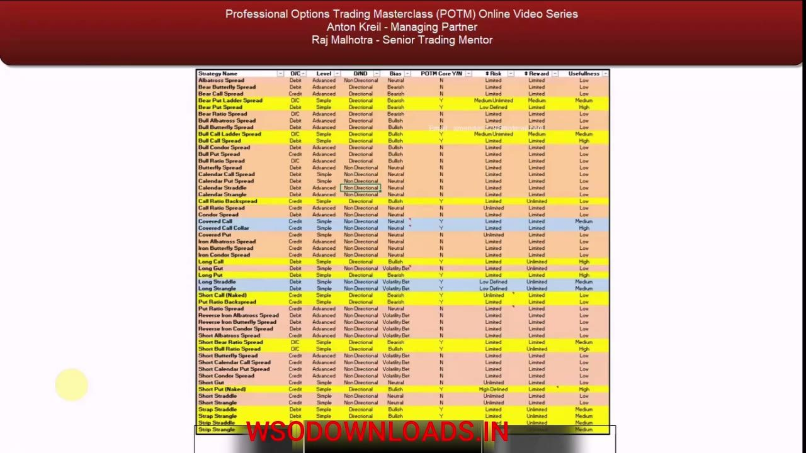
Filter 2 (main): Directional vs Non-Directional
- The single most important filter is D/ND — Directional vs Non-Directional — because the retail mandate is always bullish or bearish on an asset.
- The fundamental predisposition comes first (via the systematic process taught in the PTM), BEFORE options are even considered.
- Filtering for Non-Directional shows 29 of the 53 strategies are non-directional; therefore 24 are directional.
- The majority of available strategies are non-directional — and largely useless to a mandate that starts from a directional view.
Non-directional structures add little or no value to a trader who already has a directional fundamental view, so this filter removes the bulk of the noise in one move.
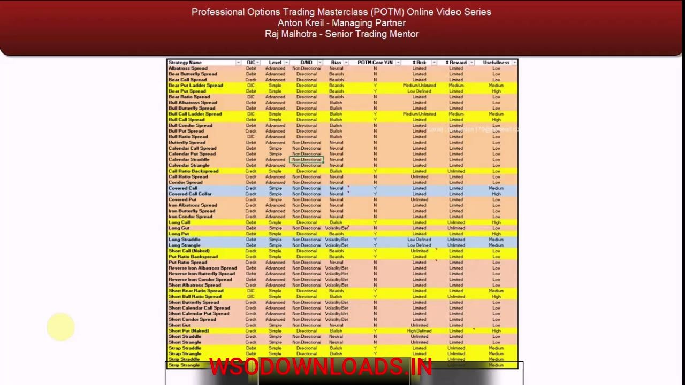
The cardinal sin: predisposition before position
- If you are fundamentally bullish, you do not short the stock 'for the hell of it' or because the chart looks bearish short-term — that is dumb.
- Likewise, bullish means you would not buy an outright put (the right to sell); bearish means you would not buy an outright call (the right to buy) before having the position.
- Shorting a stock you are fundamentally bullish on, then watching it gap 10-20-30% up on fundamentals, is the cardinal sin — the kind of thing you get fired for at a bank or fund.
- Before any options position you must have a fundamental predisposition OR a current stock position to justify WHY you are taking it.
Options are never taken merely because they are available or because you lack capital to size the underlying. Randomness in trade ideas — no systematic process — is exactly why retail traders lose.
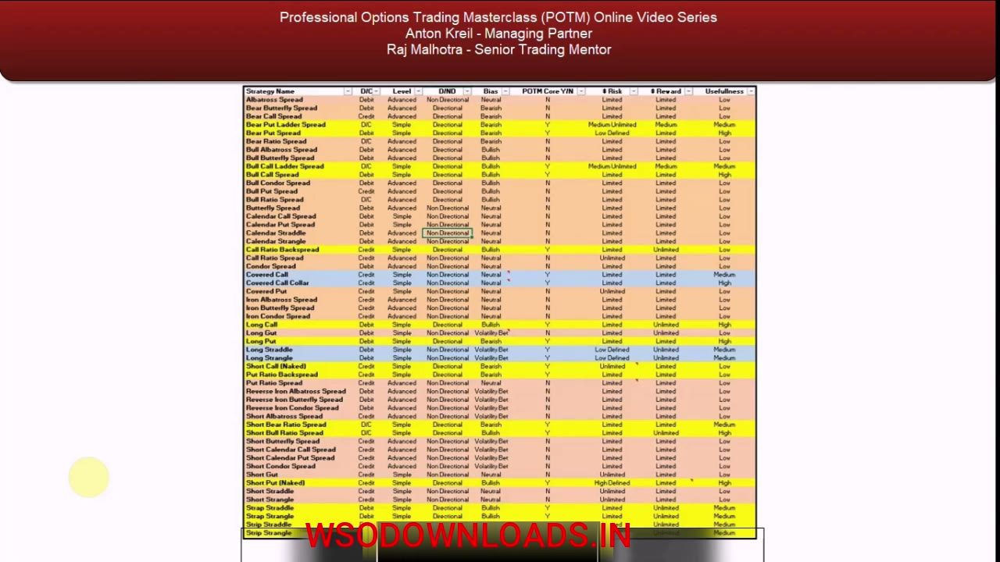
Filter 3: Simple vs Advanced — the time filter
- Directional does not automatically mean useful; many directional rows are still Low usefulness because they are advanced market-maker structures.
- The market maker's mandate is a negative-selection portfolio — very different from the retail trader's long-only or long/short positive-selection mandate.
- Retail traders have an opportunity cost of time: trading is secondary to a job or business, typically ~10-20 hours a week.
- Adding the Simple filter (drop advanced structures) to Directional leaves 16 strategies to cover in the POTM.
Advanced structures demand a lot of understanding and time yet offer little extra ROI over plain-vanilla trades. Simplicity, driven by opportunity cost of time and ROI, is the third cut.
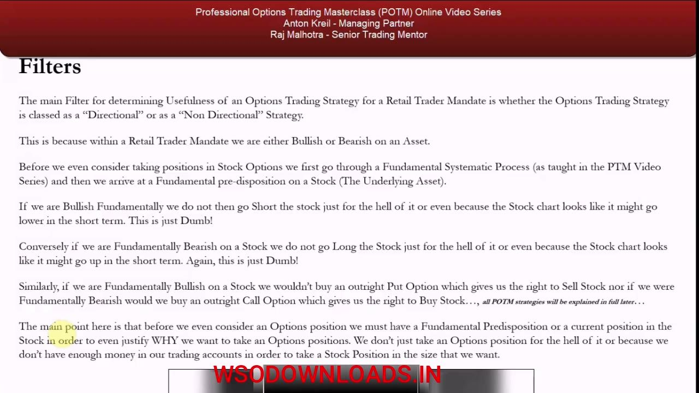
Re-adding the blue overlays: 17 useful strategies
- Some strategies left after filtering are still marked Low usefulness; a few are kept in the POTM to demonstrate what Low usefulness means at a bare minimum.
- The blue non-directional strategies are added back because, despite being neutral or volatility bets, they are useful in specific situations — mainly hedging.
- They also deepen understanding of the more useful / optimal directional strategies.
- Adding a final filter to remove Low-usefulness strategies leaves 17 strategies that make up the useful PDF.
The net result of the filter chain — capital constraint, directional, simple, then removing low usefulness while restoring the useful hedging overlays — is a set of 17 useful strategies.
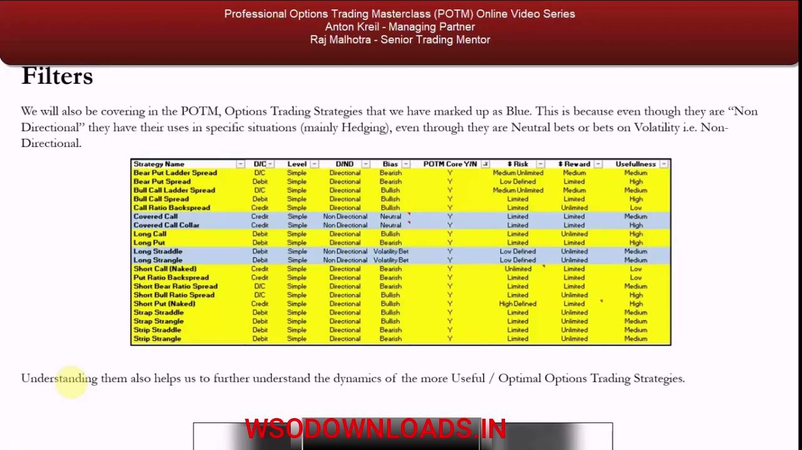
The POTM Core shortcut and the useful set
- Unfilter everything and click POTM Core Y/N = Y to instantly surface the strategies the course teaches — a one-click future shortcut.
- HIGH usefulness core: Bear Put Spread, Bull Call Spread, Covered Call Collar, Long Call, Long Put, Short Put (Naked).
- MEDIUM usefulness core: Bear Put Ladder Spread, Bull Call Ladder Spread, Condor Spread, Long Straddle, Long Strangle, Strap Straddle, Strap Strangle, Strip Straddle, Strip Strangle, Short Bear Ratio Spread.
- Roughly 16 to 20 of the 53 strategies are actually useful to the mandate — the useful PDF is the basis of everything that follows.
POTM Core = Y is the durable takeaway: when time is short at your desk, one filter returns the strategies vetted for direction, simplicity, risk/reward, and mandate fit.
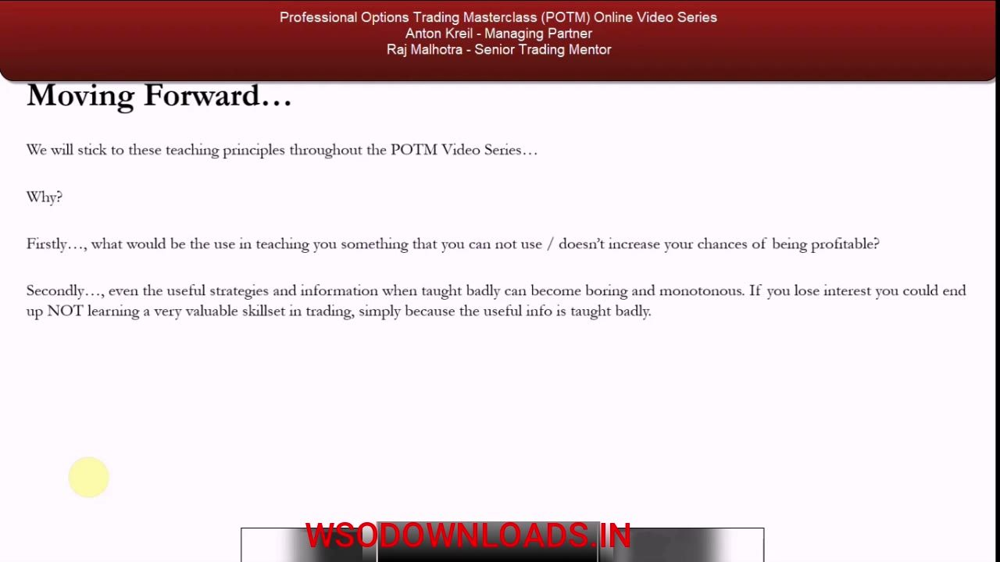
Moving forward: how the course will teach this
- The POTM takes a learning-by-doing approach with real, live-market examples, focused only on what matters to the retail mandate.
- Rattling off the 17 useful strategies across 17 back-to-back videos would bore students to death, so the course deliberately breaks up the monotony.
- Interjections by Anton Kreil, Raj Malhotra, and Chris Quill teach relevant supporting material to raise general understanding and keep you engaged.
- Two goals: maximise your chance of long-term profitability, and eliminate intellectual snobbery and boredom.
- Strategy mechanics begin in video 4 — the call option and the put option — thrown straight into the deep end with real examples.
The filtering result also dictates the teaching method. Video 4 starts the marginal benefits of directional options trading using calls and puts; video 5 covers the disadvantages; video 6 formalises them.
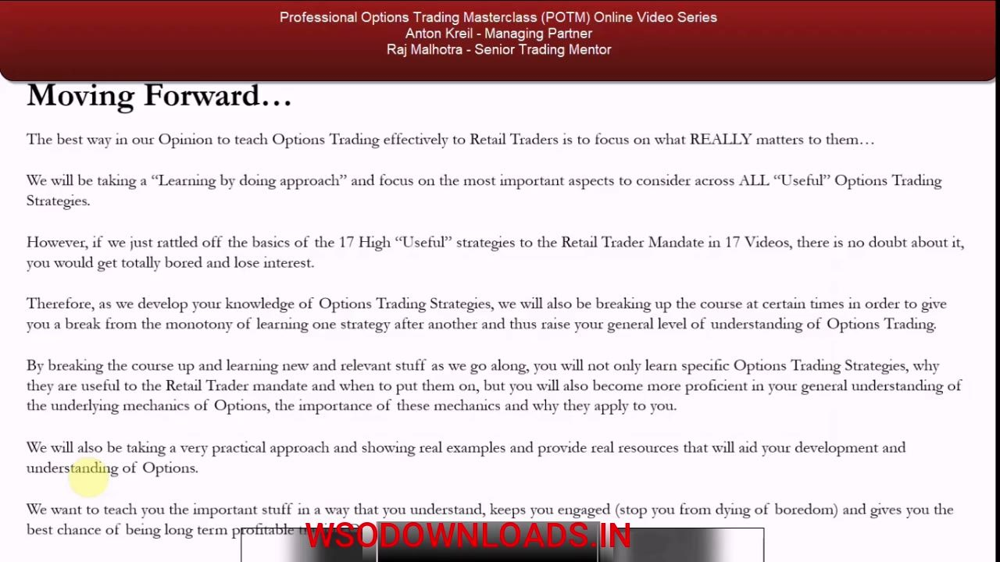
Glossary
- Retail trader mandateTrading a pot of money to make the most return with the least risk — long-only or long/short with positive selection; the same objective as a hedge fund manager or bank prop trader.
- CFD (Contract for Difference)A leveraged derivative that mirrors the price of an underlying stock. Available to international retail traders (10-20% margin) but banned in the US since 2010.
- 50% margin requirementUS broker rule requiring half the value of a cash stock position as collateral — capping US retail traders at roughly 2x leverage.
- D/C (Debit / Credit)Matrix column: whether a strategy is entered for a net debit (you pay premium) or a net credit (you receive premium); some are marked D/C.
- D/ND (Directional / Non-Directional)Whether a strategy expresses a directional view (bullish/bearish) or is non-directional (neutral or a volatility bet). The main usefulness filter.
- POTM CoreMatrix Y/N flag marking a strategy as part of the useful core taught in the POTM; filtering POTM Core = Y returns the useful set in one click.
- Usefullness (Low / Medium / High)The matrix's usefulness ranking against the retail mandate. High/Medium go in the useful PDF; Low goes in the not-useful PDF (as labelled on the slides).
- Fundamental predispositionA bullish or bearish view on a stock reached via a systematic fundamental process, held BEFORE any options position is considered.
- Marginal benefitThe specific advantage an options position must offer over simply holding the underlying stock or a CFD — the required justification for using options.
- Cardinal sinTaking a position that contradicts your fundamental view (e.g. shorting a stock you are bullish on because the chart looks weak), or taking an options position with no predisposition — an offence you'd be fired for at a bank or fund.
- Market maker mandateA negative-selection portfolio mandate, fundamentally different from the retail trader's positive-selection long/short mandate — the source of the advanced structures filtered out for low usefulness.